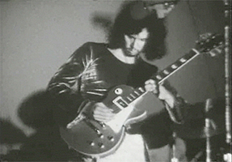
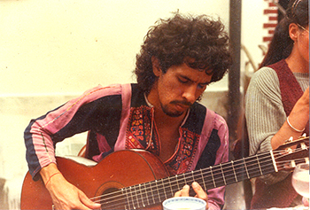
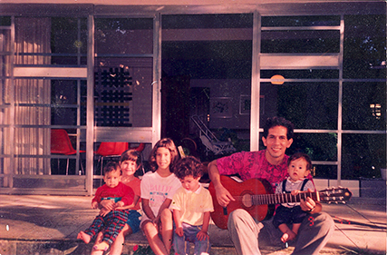
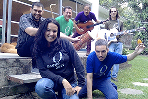
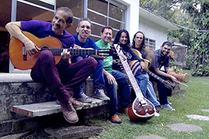

Desde pequeño en Venezuela toqué el cuatro en parrandas navideñas, actos escolares, fiestas y cumpleaños. Con este instrumento, la música pasó a ser mi mejor amiga de por vida, por la experiencia de un viaje de vacaciones a un camping en Boston con diez años, los dos hermanos solos, donde no entendí nada ni pude hablar con nadie en inglés, y me la pasé solito tocando el cuatro por mi cuenta. De adolescente de catorce años en Londres, mi hermano Claudio me presta su guitarra Estruch de nylon y me enseña unos cuantos acordes. A razón de estar sumergido completamente en la cultura musical de esa fabulosa época en Londres (1965-72), aprendo apasionadamente por mi cuenta a tocar la guitarra. Voy a todos los conciertos de grandes personajes y grupos, desde los Rolling Stones, Jethro Tull, B.B. y Albert King, hasta Jimi Héndrix, y me empiezo a dar a conocer en mi escuela William Ellis Grammar School como unos de los que saben tocar la guitarra, siendo invitado a todas las fogatas hippies que hacían los amigos en Hampstead Heath. Por influencia de los Beatles, Bob Dylan, entre muchos más, compuse como 40 canciones en inglés, y me presenté en varios clubs de música folk. Conformé mi primer grupo de bachillerato, el Spitzlowa Band e hicimos un jamming vergonzoso y humillante con el gran Rory Gallagher, quien vivía cerca de la casa donde practicábamos.
Del Rock al Clásico
De vuelta a Venezuela en 1972, entro intensamente en el movimiento del rock sanantoñero con una guitarra eléctrica dorada Gibson Les Paul Deluxe comprada con ahorros de 6 meses de jardinería en Londres antes de venirme a Venezuela. Formo el grupo experimental de piezas propias Catálysis, y toco también regularmente por dinero en fiestas y bailes con un grupo de covers de Los Teques del peluquero Giacomino, el grupo Tiempo. Me encamino simultáneamente con los estudios de guitarra clásica en el conservatorio de música Juán Manuel Olivares en Caracas con Flaminia de Desola y Antonio Lauro, presentando los conciertos acostumbrados de fin de semestre, además de un trío de guitarras y una Pequeña Agrupación de Cámara PAC de dos guitarras, flauta dulce y cello. Estudio simultáneamente la composición, cayéndome un ángel del cielo, el profesor Yannis Ioannidis y su apasionada enseñanza de la composición, brincando en dos años a la tarima internacional de la ISCM-Boston, 1976. Logro continuar mis estudios formales en Düsseldorf, avanzando en la guitarra clásica de manera autodidacta. Me llevo a Alemania unos cuantos cassettes de joropo llanero, incluyendo varios con bandola, y practico las maracas en mi cuarto encerrado tocando con el cassette a todo volumen. Mantuve un repertorio clásico en la guitarra de manera estable (Aguado, Carcassi, Carulli, Bach, Sor, Tárrega, Llobet, Lauro, Barrios), que disfrutaba tocar en reuniones y fiestas, sobretodo al final del bochinche, cuando la gente ya llegaba a estar más tranquila.
 
En Venezuela, Les Paul dorada y Catálysis, 1973 Tocando J.S. Bach en una comida en Düsseldorf, 1980, con mi Ramírez de siempre
África, Bandola, Guitarra
Paralelamente a mis estudios de composición y música electrónica en vivo en Alemania, asistí a talleres semanales de danza y percusión africana de Ghana que nacieron institucionalmente en Düsseldorf en ese mismo momento. Concluí al graduarme, con una estadía de cuatro meses en Kokrobitey, en la costa de Ghana, África Occidental. Al regresar a Venezuela, desarrollé el proyecto de la Orquesta de Instrumentos Latinoamericanos - ODILA y acudí por seis meses a clases de bandola llanera en Caracas, asimilando este instrumento con gran facilidad por tener todo su repertorio en memoria por la práctica de maracas en solitario y por el entrenamiento tanto de la guitarra como también de la ejecución rítmica africana del Agbadza, similar al joropo venezolano, base de la música de la bandola llanera. El instrumento se me convierte en una pasión a toda hora, pasando a ser un elemento de celo de dedicación por parte de las novias en los paseos a playas y montañas, atentando prohibir estrictamente su llevada en los paseos, lo que radicalmente ignoramos... Hago suplencias en clases formales de bandola y decido hacer un Método de Bandola Llanera, diferente al de Saul Vera, utilizando módulos rítmicos-armónicos que someto a prueba con los alumnos de la ODILA. Realizo composiciones de bandola sola para coreografías con Carlos Orta, toco en sus giras con Coreoarte por Europa (ver video en Alemania), giras nacionales e internacionales con la ODILA y grabo varias piezas de bandola con el grupo de música latinoamericana Key Yumei.
| Los
Diamantes (trad. ven., arrgl. E. Mendoza),
con ejecución de Emilio Mendoza en la Bandola
Llanera en Düsseldorf, Alemania, junio 1984, cuando Coreoarte estaba de gira, junto a Mandingo Rengifo, maracas y AntonioLópez en el cuatro y los bailarines de Coreoarte Poy Márquez y Efraín Guerra. |
Patrones, Guitarra clásica, Jazz ecológico
Mientras estudio el doctorado en Washington, DC, toco guitarra y bandola con la agrupación Little Venice, y al graduarme doy clases de guitarra todos los días por dos meses en el verano a escolares sin previo conocimiento musical, como parte de un programa para la prevención del uso de las drogas en esa ciudad. Para ese compromiso inusual, desarrollo un método para aprender a tocar guitarra con el uso de patrones de escalas, lo cual dio resultados asombrosos tanto para los estudiantes como para mi persona. Por mucho tiempo, lo fui desarrollando y probando en escuelas, alumnos privados y en mi desarrollo personal, armando y puliendo el método hasta lograr el presente "Los Patrones de Emilio".

De vuelta a Venezuela, en La Perla con mi bella familia, 1994
Al ser presidente de una institución en Caracas (FUNDEF), contaba con la dicha de un chofer. Afortunadamente había mucho tráfico en la vía de mi casa a la institución con largas colas a diario. El carro se convirtió en mi lugar preferido por poder practicar la guitarra en todas las colas, con poco movimiento del vehículo. Al tener en mi repertorio la Chaconne de J. S. Bach a dedo perfecta, entre otras obras maestras de siempre en la guitarra, me sentí satisfecho con el mundo "clásico" y decidí abordar desde el 1999 el mundo "pop-jazz", que además me ayudaba a incrementar el salario universitario tocando standards de Jazz en muchos locales. Poco a poco fui creando mis propias piezas, bautizando el estilo como "Jazz de los Altos" con el grupo Akurima.
 En La Perla, 2000. |
GIROS - Catálysis, en película de 16 mm muda, grabada por Pedro Galindo en vivo en el concierto de rock experimental, junio 1973, con fondo de la misma pieza grabada por Akurima, 2006, donde el autor hace el primer solo "bandoleado." |
|
Desempeñé la ejecución de la guitarra, composición y arreglos de piezas, producción de discos y videos con una serie de grupos de jazz. Vinculé la última agrupación, Ozono Jazz, del 2005, con el activismo ecológico en pro de la reducción del ruido humano y denuncia de derrames de petróleo en el país.
 
Ozono Jazz, 2016.
Con toda esta experiencia logré desarrollar una serie de composiciones para guitarra, todas grabadas y con videos, que están en proceso de ser transcritas a notación tradicional. Logré además, generar un estilo musical propio o género, llamado "joroponovo", con la característica de la guitarra con técnica "jalao" de la bandola llanera, así como con el toque "arpeado" de rápidos arpegios en la mano derecha, utilizando cuerdas al aire para dar una sonoridad semejante al arpa.
Espirales, joroponovo bandoleado
Video de María Cristina Capriles y ESCINETV, de la participación de Ozono en el
Concierto Homenaje "Memorias del Maestro Alfredo del Mónaco", Sala de Conciertos, Unearte, Caracas, 17-07-2016.
Incluye anuncio de la solicitud de enmienda constitucional contra el ruido.
En el Mural La Perla, 2020, terminando "Los Patrones..."